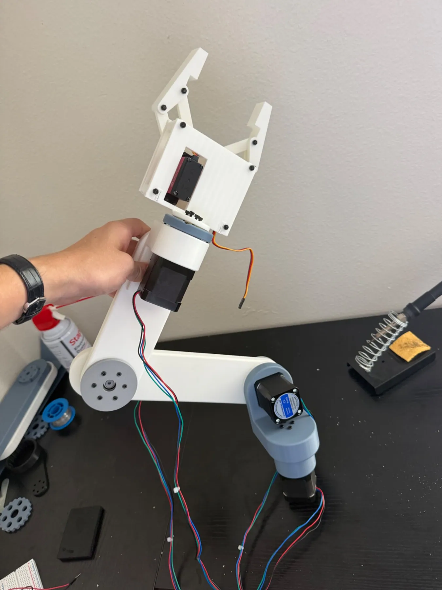

Actual project photographCustom Multi-Axis Robotic Arm
Designed and 3D printed a robotic arm with custom gear reductions, stepper-driven joints, and a servo-actuated gripper. The project combines CAD, drivetrain design, torque calculations, fabrication, and electronics integration.
Read project details
- Developed custom cycloidal and planetary gearbox concepts, including approximately 20:1 and 9:1 reduction designs.
- Modeled and iterated mechanical components in SolidWorks for 3D printing on a Bambu P1S.
- Performed static torque calculations in MATLAB to evaluate joint loading and lifting capability.
- Integrated NEMA 17 stepper motors, motor drivers, power distribution, and servo control.
- Status: Mechanical prototype and electronics testing in progress. Performance is not presented as validated.